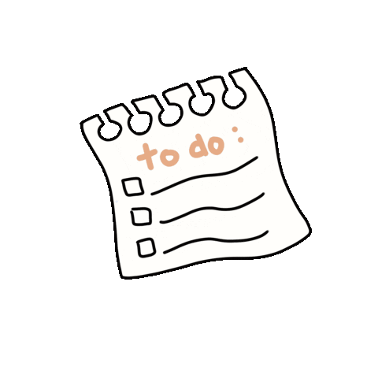

<section>
  <header>
    <h1><span>TasksToDo</span> will help you to organize your daily routine. Don't forget about your plans and duties.</h1>
  </header>
  <section id="login-wrap">
    <div id="login-block" *ngIf="!isAuth">
      <p>Login to continue</p>
      <div class="btn-group">
        <a [routerLink]="'/login'"><button class="btn btn-success">Log In</button></a>
      </div>
    </div>
    <div id="img-block">
      
    </div>
  </section>
</section>
